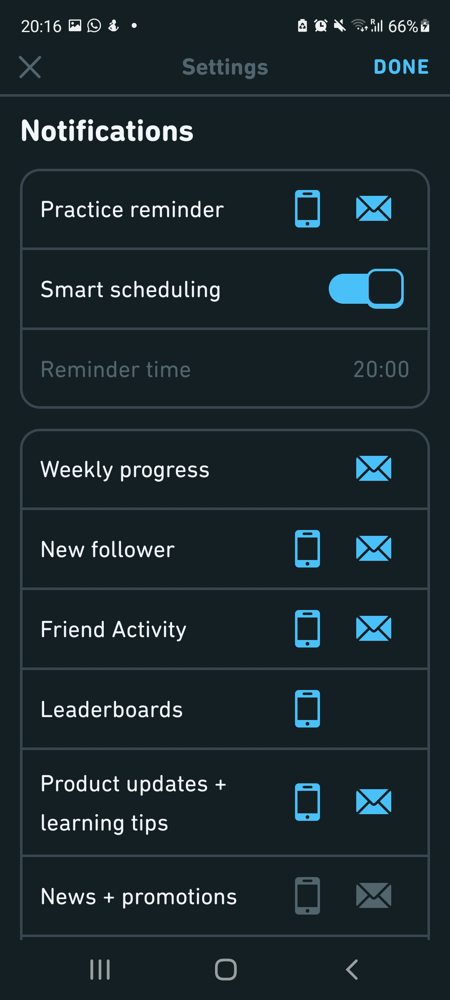
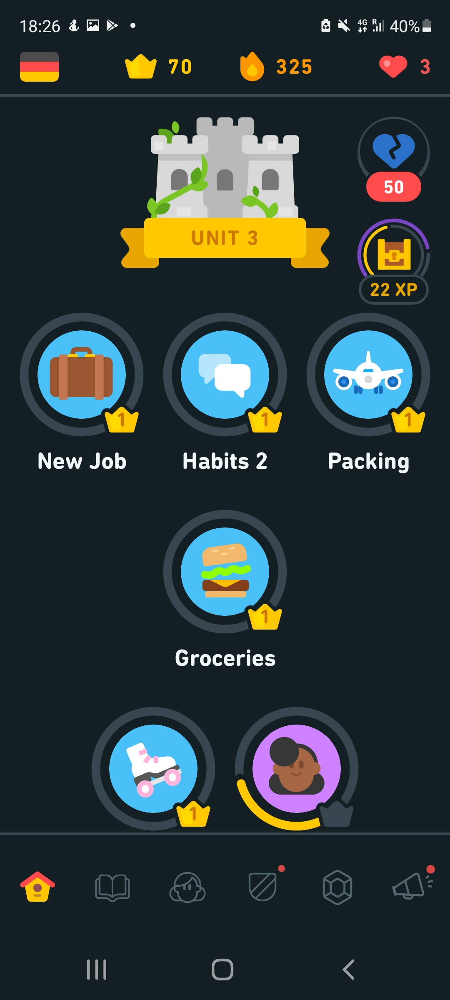

Duolingo
What kind of information can the user control and change?
- Linking contacts
- Assignments (speaking / listening)
- Courses / language
- Notifications
- Daily goals (minutes)
In the Duolingo app and website, the user can change whether they want to link contacts, change the language course, change whether they want speaking assignments or not and change the notifications. It makes it so that the user has the best experience in learning a new language. It makes it so that the notifications and assignments can be adjusted to the daily or weekly routine of the user.
How does the application lead the user activity?
- Clear interface
- Some things cannot be found (as easy) in the app
- Clear icons
The interface of Duolingo is very clear. The only time I have had to search something for help was to remove a language course I accidentally added. This apparently could not be found in the app, but on the website. This was not very convenient as I don’t always have my laptop with me, or on.
Can the user make changes to the interface?
- Dark/Light mode
The only option to change the interface is to turn on/off dark mode. The courses are the same for everybody that does the same level of the language.
Is the interface "inductive" or "deductive"?
- Clear profile creation
- Clear questions (level of language etc.)
- Not too many options
- Clear instructions
The app is clear with the process of creating the profile. The questions are clear. Such as: What language would you like to learn? Then it shows the flags of each country and the name of the language. It also asks: Do you already know a bit of the chosen language? The app then shows a few buttons with texts like “No” or “A little bit” on which you can click. In the app it is very clear what steps to take to partake in a course. When on the main page there are not many different options, but only to click on which level you want to partake in next, as well as icons that have a clear meaning. Buttons are clear and so is the text. During the learning process when you click on the level you want to learn in on the app, there are very clear instructions on how to do the exercises, such as: “Touch to speak” for speaking assignments or “Put the buttons in the right order” or “Touch the buttons with the words that are being said in the right order”.
Does the application offer a "progressive disclosure" in relation to its workflow?
- Weekly emails
- Statistics
- New words
- New sentences
In the app, your progress is shown by either having more chapters available to you or by a yellow line around the chapter. Each chapter must be done 5 times (though more is possible to practice or earn prizes) for you to open the next chapter and make progress.
Does the application involve an Authorization process? What are the steps involved in the Login/Logout?
The flow of both of the apps is great, it’s mad extremely clear what option the user has and what steps to take in the process of creating the account and learning within the app or website. You need to sign up using your mail and choose if you want the premium paid version or not. I remember having to confirm my email.


